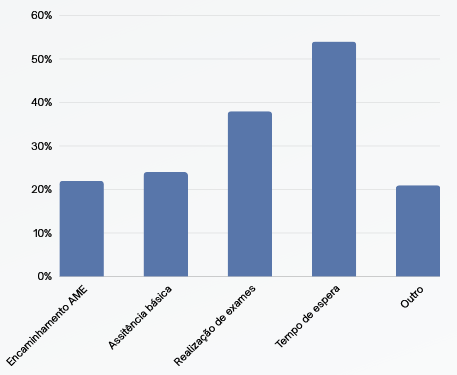

Para o melhor entendimento de nossa solução, é importante que tenhamos uma visão do impacto do problema. No gráfico abaixo, temos o resultado de uma pesquisa feita pelas instituições Sindicato dos Hospitais, Clínicas e Laboratórios do estado de São Paulo (SindHosp). A pesquisa consistiu em entrevistas, onde vizualizou-se que 83% das pessoas entrevistadas enfrentam problemas com instituições de saúde, sendo a fila de espera o caso mais comum.
Para a Global Solution em parceria com a Hapvida Notredame Intermédica, desenvolvemos uma solução que visa combater as elevadas filas de espera por atendimento médico e a falta de acessibilidade da saúde. Idealizamos a criação de um método inovador de acompanhamento médico, possibilitando que o paciente passe pelo processo de triagem de maneira online. Arquitetamos um código em Python para a visualização do funcionamento dessa projeto.
O processo da triagem acontecerá por meio de um website, onde o paciente fará o seu cadastro com nome, data de nascimento, cpf, email, senha e número de telefone. Essas informações ficaram salvas no sistema e o paciente pode então realizar o login no website, fornecendo o email e senha utilizados no cadastro. Em seguida, o paciente pode prencher uma série de formulários descrevendo os sintomas notados, medicamentos que o paciente usa, alergias e doenças em tratamento. Essas informações são armazenadas num prontuário único com o seu nome, data de nascimento, email para contato e data de preenchimento do formulário. O médico parceiro tem acesso à todos os prontuários e pode escolher acessá-los por nome do paciente.